Project Overview
This project applies a full big-data pipeline to the NOAA Global Historical Climatology Network — Daily (GHCN-Daily) dataset to investigate four research questions on regional warming, extreme-rainfall trends, anomalous climate events, and seasonal-pattern shifts across Southeast Asia from 2000 to 2024.
Warming per decade
All 5 main countries show statistically significant TMAX and TMIN warming trends over the 25-year window.
Extreme rainfall events
IQR-flagged extreme precipitation days show an increasing trend in Philippines, Vietnam, and Thailand.
Anomaly threshold
Z-score method flags heatwaves and cold snaps; IQR handles skewed rainfall; Isolation Forest finds multivariate outliers.
Seasonal cycle
Seasonal decomposition confirms a strong 12-month monsoon signal; residuals show a slow upward drift consistent with warming.
Exploratory Data Analysis
Six figures examine long-term temperature trends, monsoon seasonality, country-level TMAX heatmaps, the geospatial distribution of weather stations, data-coverage completeness, and station-level variation within Vietnam.
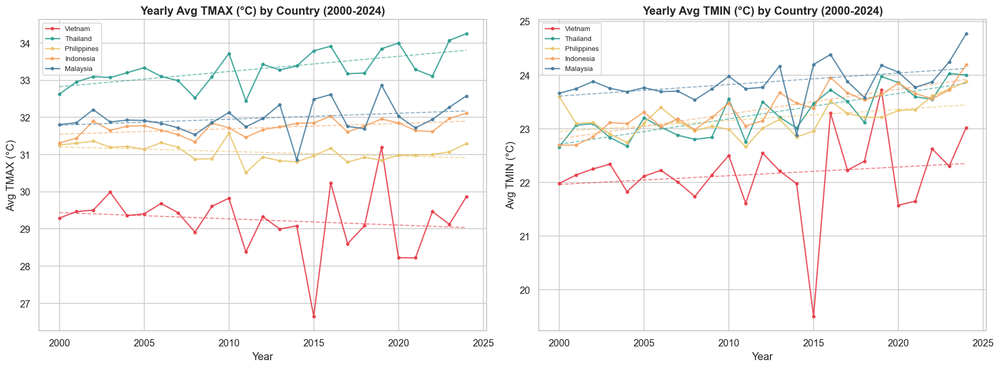
Temperature Trends (2000–2024)
Yearly average TMAX and TMIN per country with OLS linear trendlines. All five main countries (Vietnam, Thailand, Philippines, Indonesia, Malaysia) show a positive warming slope. TMIN typically warms faster than TMAX, narrowing the diurnal temperature range in some regions.
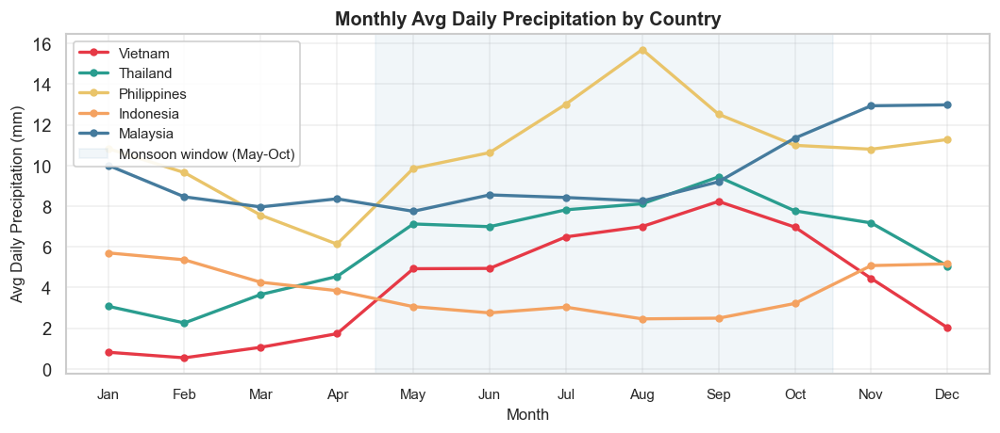
Monsoon Seasonality
Monthly average precipitation per country, revealing distinct wet-season peaks. Thailand and Vietnam show classic Southwest Monsoon onset (May–October); the Philippines experiences two wet peaks driven by typhoon season and the northeast monsoon. Rainy-day counts confirm season length differences.
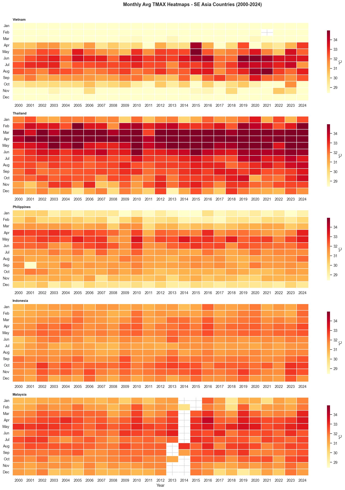
TMAX Heatmap — All Countries
Small-multiple heatmaps showing monthly average TMAX over all 25 years for each country. The colour gradient reveals both the annual seasonality (hot/cool months) and the long-term upward shift in temperature visible as a gradual brightening from left (2000) to right (2024).
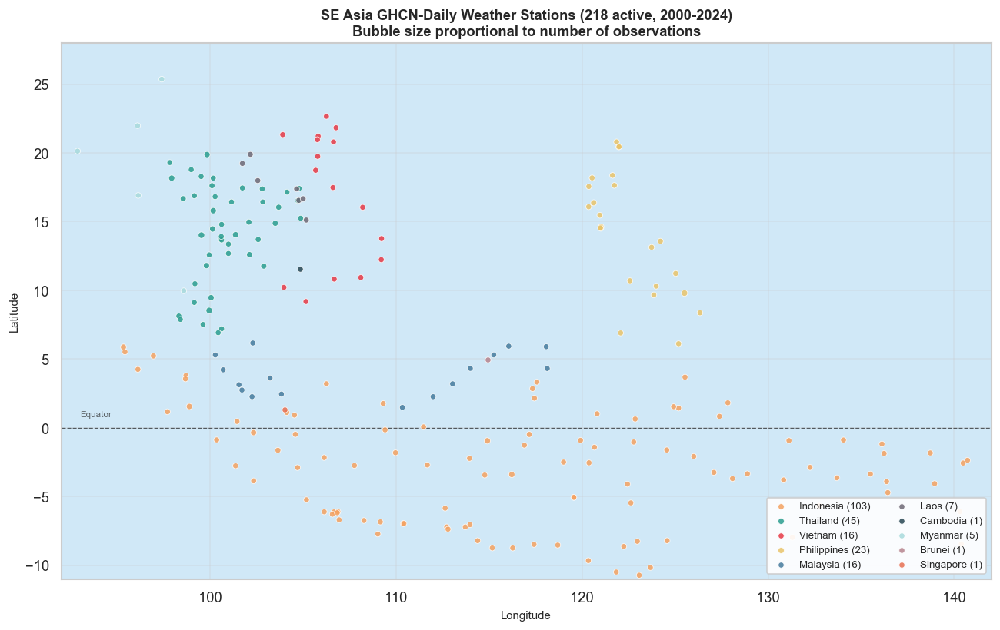
Geospatial Station Map
Scatter map plotting all GHCN-Daily stations used in the analysis (92°E–142°E, 11°S–28°N). Station density is highest in Vietnam, Thailand, and the Philippines; Brunei and Singapore have very few stations. Marker size scales with observation count, highlighting data-rich stations.
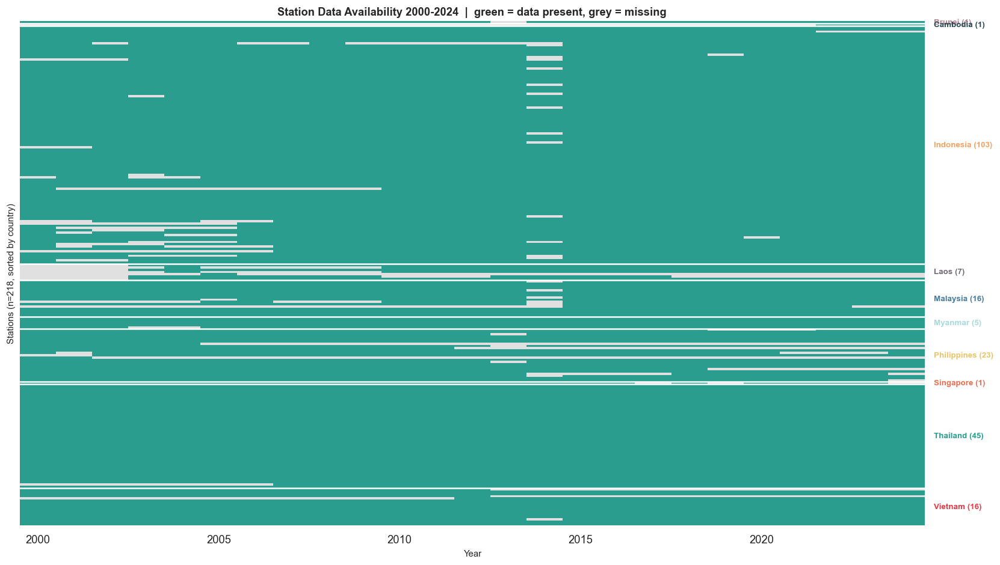
Data Availability Heatmap
Station × Year heatmap of observation count. White/dark cells indicate missing or sparse data years; bright cells confirm complete annual records. Several stations drop out around 2020–2022, likely due to COVID-19 reporting interruptions. Coverage is generally excellent for the 2000–2019 period.
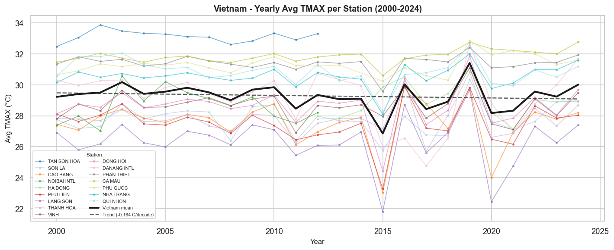
Vietnam Station-Level TMAX Trends
Yearly average TMAX for individual Vietnamese stations (2000–2024). Northern stations (Hanoi region) show greater inter-annual variability and more pronounced cold winters, while southern stations near Ho Chi Minh City maintain a relatively stable year-round temperature. Station spread quantifies local spatial heterogeneity.
Anomaly Detection
Three complementary methods detect extreme weather events: Z-score (|z| > 3σ) flags heatwaves and cold snaps from the per-station monthly TMAX baseline; IQR detects extreme rainfall (above the 95th percentile) without assuming normality; Isolation Forest captures multivariate outliers in the TMAX × TEMP_RANGE feature space. Three case studies ground the results in documented real-world events.
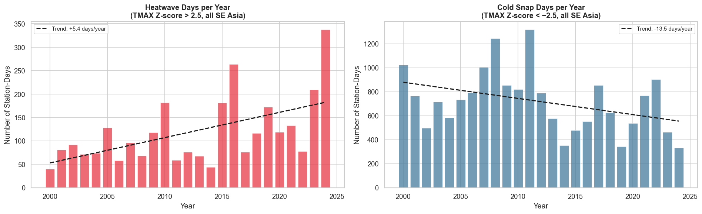
Anomaly Frequency Trend (Z-score)
Stacked bar chart of heatwave and cold-snap event counts per year across all countries. A rising trend in heatwave detections from ~2015 onwards is consistent with the warming signal in EDA. Cold-snap counts are more stable, with notable spikes in years with strong La Niña events (2010–2011, 2020–2022).
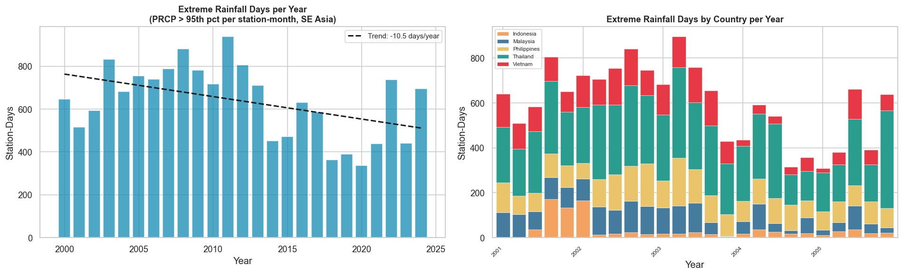
Extreme Rainfall Trend (IQR)
Left panel: region-wide total extreme-rain days per year. Right panel: per-country breakdown. The Philippines and Vietnam drive the most extreme rainfall events. An upward trend from 2010 onwards aligns with intensification of typhoon seasons and increased ENSO-linked precipitation extremes.
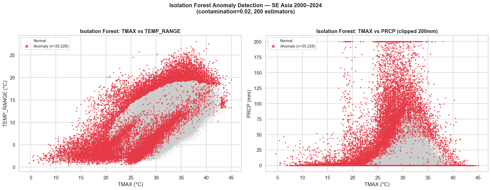
Isolation Forest — Multivariate Outliers
Scatter plots of TMAX vs TEMP_RANGE (left) and TMAX vs PRCP (right), coloured by Isolation Forest anomaly score. Grey points are normal; orange/red are flagged anomalies. Outliers cluster at extreme low TMAX + high PRCP (cold wet events) and extreme high TMAX + wide temp range (heatwaves with clear nights).
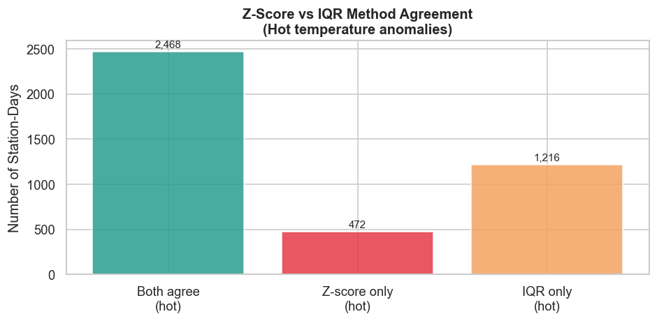
Method Comparison — Z-score vs IQR Agreement
Confusion-style agreement matrix comparing Z-score and IQR flags on the same records. Events flagged by both methods are high-confidence anomalies; single-method flags indicate methodological sensitivity. Z-score and IQR agree most strongly on temperature extremes; IQR uniquely captures moderate but sustained rainfall events Z-score misses.
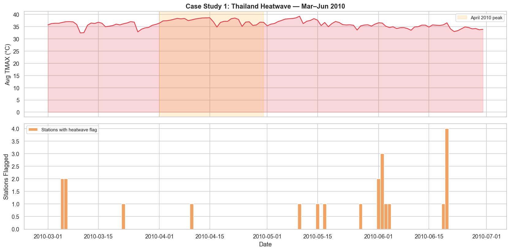
Case Study 1 — Thailand Heatwave (2010)
April 2010 was one of Thailand's hottest months on record. The timeseries plots show TMAX at multiple stations spiking well above their historical monthly baselines (dashed lines) with Z-scores exceeding +4σ. The event aligns with a documented WMO heat emergency and validates the Z-score detection pipeline on a known real-world event.
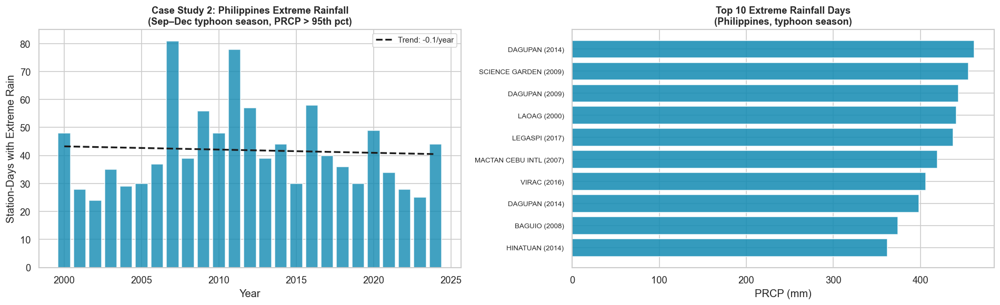
Case Study 2 — Philippines Typhoon Rainfall
Philippines stations in the September–December typhoon season, showing yearly counts of IQR-flagged extreme-rain days. Peak years (2009, 2011, 2013, 2022) correspond to exceptionally active typhoon seasons documented by PAGASA. The chart confirms the IQR method captures typhoon-driven precipitation extremes effectively.
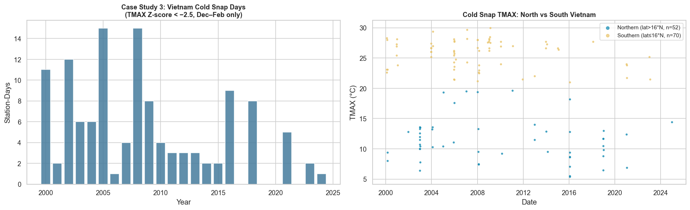
Case Study 3 — Vietnam Northern Cold Snaps
Northern Vietnam (Hanoi region, low latitude band) experiences cold spells in December–February when cold Siberian air masses break through. The scatter/map visualisation shows Z-score flagged cold-snap events concentrated at higher-latitude northern stations, confirming geographic stratification. Frequency spikes in 2008, 2016, and 2021 match La Niña years with stronger winter monsoon intrusions.
Regression & Trend Analysis
OLS linear regression quantifies per-country warming rates; residual diagnostics validate model assumptions; per-country extreme-precipitation trends are fitted with linear models; seasonal decomposition separates the trend, seasonality, and residual components for Thailand's monthly TMAX series.
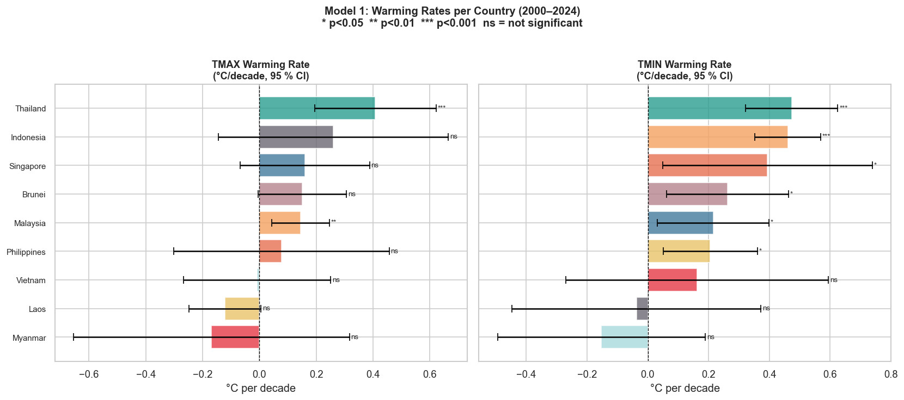
Warming Rate Forest Plot
Horizontal dot-and-whisker plots showing TMAX (left) and TMIN (right) warming rates in °C per decade for all countries, ordered by rate magnitude. 95% confidence intervals are shown. Most countries show 0.2–0.4°C/decade warming; TMIN rates generally exceed TMAX rates, consistent with global patterns of asymmetric night-time warming.
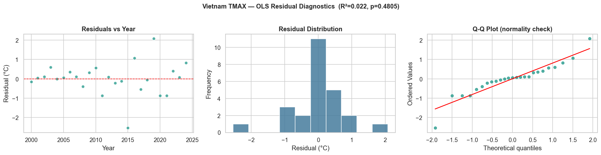
Residual Diagnostics — Vietnam TMAX Model
Three-panel diagnostic for Vietnam's TMAX OLS model: (1) residuals vs year — no clear pattern confirms linearity; (2) histogram of residuals — roughly normal, supporting inference validity; (3) Q-Q plot — tails are light, indicating the model is not distorted by extreme outliers. Overall diagnostics support using this regression for inference.
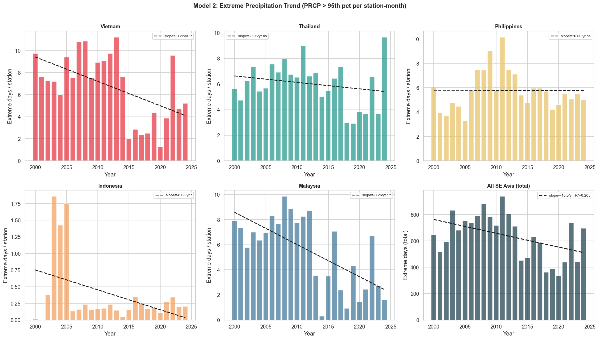
Extreme Precipitation Trend — Per Country
Six-panel chart (2×3 grid) showing normalised extreme-rain day counts per year for each country with a linear trendline. Philippines and Vietnam show the steepest positive slopes. Malaysia and Indonesia exhibit weaker trends. Scatter around the trendline reflects strong ENSO-driven interannual variability rather than random noise.
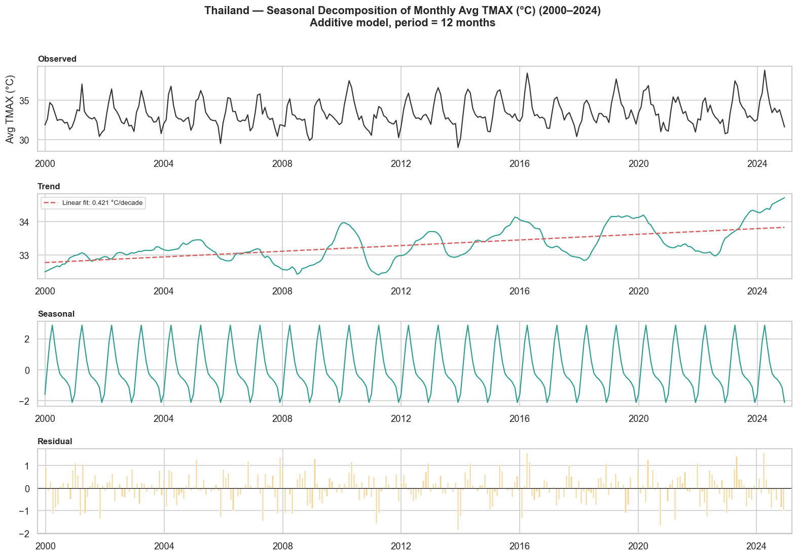
Seasonal Decomposition — Thailand TMAX
Additive decomposition of Thailand's monthly TMAX series into: Trend (slow upward drift confirming warming), Seasonal (12-month monsoon cycle with April peak and November trough), and Residual (year-to-year deviations, elevated during El Niño years 2015–2016 and 2023–2024).
Multi-Country Comparison Visualisation
A radar (spider) chart summarises six key climate metrics across all countries on a single normalised scale, enabling intuitive multi-dimensional comparison and highlighting which countries are hottest, wettest, or most anomaly-prone.
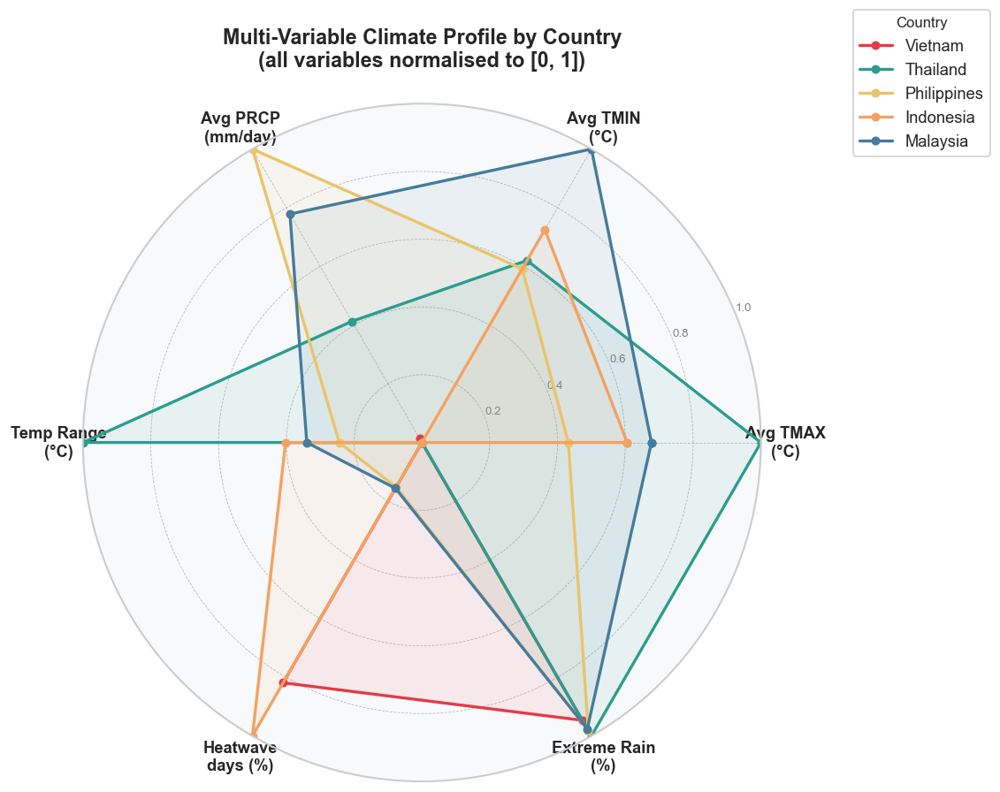
Multi-Country Climate Radar Chart
Six axes — Avg TMAX, Avg TMIN, Avg PRCP (mm/day), Temp Range (°C), Heatwave days (%), and Extreme Rain (%) — are min-max normalised to [0, 1] so that countries can be compared across unlike units.
Philippines dominates the precipitation and extreme-rain axes, reflecting typhoon exposure. Thailand scores highest on heatwave percentage. Vietnam shows the widest temperature range due to its latitudinal extent. Singapore has minimal temperature range and relatively low extremes, reflecting its equatorial maritime climate.
Research Question — Figure Mapping
| Research Question | Supporting Figures | Key Finding |
|---|---|---|
| RQ1 — Is the region warming? | eda_01, eda_03, eda_06, reg_01, reg_02 | Yes — all countries show +0.2 to +0.4°C/decade; TMIN warms faster than TMAX. |
| RQ2 — Are extreme rainfall events increasing? | anom_02, anom_06, reg_03 | Yes — Philippines and Vietnam show statistically significant upward trends in extreme-rain days. |
| RQ3 — What anomalous events occurred? | anom_01, anom_03, anom_04, anom_05, anom_06, anom_07 | Thailand 2010 heatwave, Philippines typhoon seasons, Vietnam cold snaps confirmed by three independent methods. |
| RQ4 — Are seasonal patterns shifting? | eda_02, reg_04, viz_01 | Monsoon cycle remains stable (12-month period) but trend component shows consistent upward drift since 2010. |